| Previous |
x86: Installing or Upgrading the Developer Release
You can install or upgrade the Solaris OS on x86 laptops by using the following procedures.
To Start an Installation or Upgrade of the Solaris OS on an x86 Laptop
To Complete an Initial Installation of a Solaris OS on an x86 Laptop
To Start an Installation or Upgrade of the Solaris OS on an x86 Laptop
Before You Begin
Before installing or upgrading the Developer release, see Solaris Express Developer Edition System Requirements for a complete list of system requirements and critical preparatory information.
Review the following default settings that are used for the Developer release.
This release installs a Solaris system that is automatically networked by using DHCP with DNS name resolution.
The NWAM daemon is enabled by default when you perform an initial installation of the Solaris Express Developer Edition release. For more information, see Automated Network Configuration in Solaris Express Installation Guide: Planning for Installation and Upgrade.
IPv6 is disabled.
The DNS domain and server IP addresses are retrieved from the DHCP server.
The NFSv4 domain is dynamically derived.
Kerberos is disabled.
- Insert the DVD in your system.
- Boot the system by shutting it down and then turning it off and on.
- If you need to manually set the BIOS to boot from DVD,
type the appropriate key sequence to interrupt your system boot process.
Modify the boot priority in the BIOS, and exit the BIOS to return to the installation program.
Note - Many system enable you to specify a one-time boot without altering the BIOS.
A memory test and hardware detection are executed. The screen is refreshed. The GRUB menu is displayed.
- In the GRUB menu, select the Solaris Express Developer Edition option for a
quick installation or upgrade that provides all the developer tools.
GNU GRUB version 0.95 (631K lower / 2095488K upper memory) +-------------------------------------------------------------------------+ | Solaris Express Developer Edition | | Solaris Express | | Solaris Express Serial Console ttya | | Solaris Express Serial Console ttyb (for lx50, v60x and v65x) | +-------------------------------------------------------------------------+ Use the ^ and v keys to select which entry is highlighted. Press enter to boot the selected OS, 'e' to edit the commands before booting, or 'c' for a command-line.
The GRUB menu includes the following four choices.
- Solaris Express Developer Edition
This option is a quick x86 laptop installation or upgrade with developer tools. This installation is the default and if you wait, it automatically starts. This guide describes this laptop installation procedure.
- Solaris Express
This alternate installation option provides SPARC and x86 system administrators with the necessary choices to set up servers and clients during the installation process. Because of these configuration choices, this installation requires more time. This GUI installation option does not include the developer tools.
- Solaris Express Serial Console ttya and ttyp
These alternate installation options provide SPARC and x86 text-mode installations that can operate with less than 768 MB of memory. Serial Console installations include server and client configuration choices, and, therefore, require more time to install. These installation options do not include the developer tools.
For more information about the alternate installation options, see Solaris Express Installation Guide: Planning for Installation and Upgrade.
A second screen is displayed.
- To install the Developer release, type 1 in the following screen, then press
Enter.
+--------------------------------------------------------------+ | Select the type of installation you want to perform: | | | | 1 Solaris Interactive (default) | | 2 Apply driver updates | | 3 Single user shell | | | | Enter the number of your choice followed by the <ENTER> key. | | Alternatively, enter custom boot arguments directly. | | | | If you wait 30 seconds without typing anything, | | an interactive installation will be started. | +--------------------------------------------------------------+
The system configures the devices and interfaces and searches for configuration files.
If the operating system cannot locate a self-identifying keyboard, the following screen is displayed:
- In the following screen, select the desired keyboard layout by highlighting the desired
option, then press Return.
Configure Keyboard Layout +---------------------------------------------------------------------------+ | Please specify the keyboard layout from the list below. | | | | To make a selection, use the arrow keys to highlight the option and | | press Return to mark it [X]. | | | | Keyboard Layout | | ----------------------- | | [ ] Serbia-And Montenegro | | [ ] Slovenian | | [ ] Slovakian | | [ ] Spanish | | [ ] Swedish | | [ ] Swiss-French | | [ ] Swiss-German | | [ ] Taiwanese | | [ ] TurkishQ | | [ ] TurkishF | | [ ] UK-English | | [ X] US-English | | | | F2_Continue F6_Help | +---------------------------------------------------------------------------+
- In the following panel, move the cursor into the screen and press Enter.
Starting Solaris Interactive (graphical user interface) Installation +------------------------------------------------------------+ | You must respond to the first question within 30 seconds | | or the installer proceeds in a non-window environment | | (console mode). | | | | If the screen becomes blank or unreadable the installer | | proceeds in console mode. | | | | If the screen does not properly revert to console mode, | | restart the installation and make the following selection: | | | | Solaris Interactive Text (Console session) | -------------------------------------------------------------+
Note - If your system has insufficient memory, the program exits and displays an error message. To install with the Developer release, you must have enough system memory to display a graphical user interface (GUI). You can upgrade your system's memory and restart the installation.
To use less memory to install, follow these steps:
Restart the installation.
On the GRUB menu, select one of the Solaris Express Serial Console options instead of the Solaris Express Developer Edition option.
This alternative provides a text-mode installation that requires additional configuration input. This option does not include the developer tools.
Progress messages are displayed.
- Move your cursor into the following text screen and press Enter.

- In the following panel, select a language for the installer, then click OK.
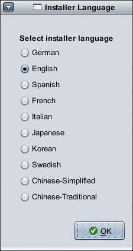Note - Starting at this point in the installation, you can open a terminal window at any time by pressing Alt-Tab on your keyboard.
- In the following panel, click either Initial or Upgrade, then click Next.
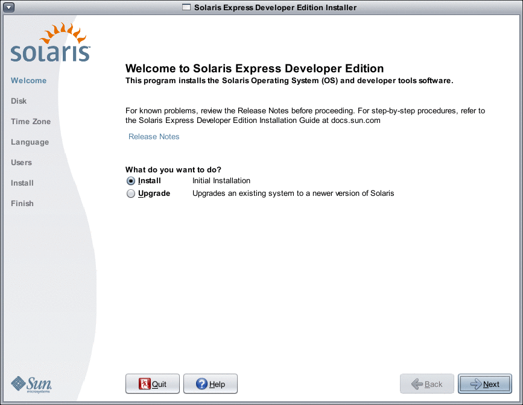By clicking Install, you perform an initial installation of the Solaris OS which overwrites the existing Solaris file system with the new version of the Solaris OS. If your system is not running the Solaris OS, you must perform an initial installation.
CAUTION: Note the following important considerations:
On x86 systems, the installation overwrites the whole disk layout if one of the following is true:
The disk table cannot be read.
The disk was not previously partitioned.
If an existing Solaris partition is on the disk, and the user makes no modifications to the partitions, the installation overwrites the Solaris partition only. Other existing partitions are not changed.
An upgrade of the Solaris OS merges the new version of the Solaris OS with the existing files on the system's disk or disks. An upgrade saves as many modifications as possible that you have made to the previous version of the Solaris OS. If you select Upgrade, an upcoming panel displays all available operating systems and identifies which ones can be upgraded.
Additional options in the Welcome panel include the following:
You can choose to end the installation on any panel by selecting the Quit button.
If you click the Quit button, a dialog box asks you to confirm cancellation of the installation. On confirmation, a terminal window is opened where you can enter commands. Command options include:
To reboot the system:
% reboot
To restart the installer:
% install-solaris
- Depending on whether you selected an upgrade or an initial installation, proceed as
follows:
- If you selected an initial installation, see To Complete an Initial Installation of a Solaris OS on an x86 Laptop
- If you selected an Upgrade, see To Complete an Upgrade of a Solaris OS on an x86 Laptop.
To Complete an Initial Installation of a Solaris OS on an x86 Laptop
Before You Begin
Complete Steps 1–10 in To Start an Installation or Upgrade of the Solaris OS on an x86 Laptop.
- In the following panel, indicate disk size and Solaris OS location.
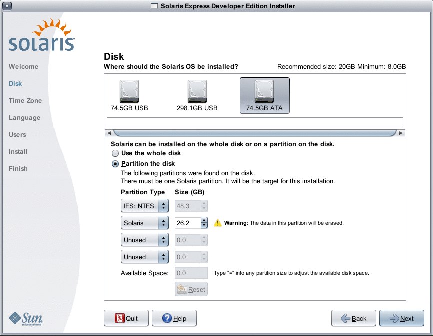- In the top portion of the panel, select the disk where the
Solaris OS will be installed.
The top portion of this panel displays the internal disks, external disks, and solid-state drives that are available on the system. This panel also displays the size of each disk in gigabytes. For details about a disk, move the cursor over the disk icon. A pop-up window provides disk specifications.
Note - In order to be recognized by the installer, the disks and solid-state drives must be turned on at the time the computer boots.
The recommended minimum size for the Solaris OS installation is displayed. Disks that are too small for a successful installation are labeled as such. The recommended size is at least 20 Gbytes. If the partition is 20 Gbytes or more, the installer creates a separate file system for the use of Live Upgrade in the future. Also, more space is allocated for the /export/home directory for the users.
Installation on a disk or partition that is smaller than recommended is permitted, if this disk or partition is large enough to hold and run the installed system. Smaller than recommended size installations might not enable you to fully utilize the Live Upgrade feature. The absolute minimum is 8 Gbytes for an English-only installation.
- In the bottom portion of the panel, click to either Use the
whole disk or Partition on disk.
The bottom portion of this panel displays the existing disk partitioning.
CAUTION: If the existing partition table cannot be read, a warning is displayed, and the panel displays proposed partitioning. In this case, all data on the disk is destroyed.
- If you choose to partition the disk, review the following partitioning guidelines:
Only x86 based systems can be partitioned.
Only one Solaris partition is enabled.
You can resize existing partitions, delete partitions, and create new partitions in this panel. For this option, one existing Solaris partition must be available as the target for the installation.
The partitions are displayed in physically sequential order as they are laid out on the disk.
CAUTION: Resizing a partition destroys the data on that partition and all physically subsequent partitions. Existing data is not moved to conform to a new partition layout. However, resizing the last partition or adding a new partition does not affect the data that already exists in other partitions. Non-Solaris partitions cannot be resized.
To make additional space available, change a non-Solaris partition to an Untyped partition.
CAUTION: If you make this change, all subsequent non-Solaris partitions are also changed to Untyped partitions.
The Unallocated Available Space field tracks any disk space that has not been allocated to a specific partition. You can type “=” into any partition size field to alter its size so that remaining unallocated space is zero.
Note - Manual control of the Solaris file system layout is not supported. During the installation, the Solaris fdisk partition is reformatted with a default file system layout. All existing file systems on the Solaris partition are destroyed. The default layout is determined by the disk partition size according to preset defaults.
The default file system layout is as follows:
If the disk size is less than 8 Gbytes, installation is not allowed.
For a disk size between 8 Gbytes and 10 Gbytes:
The default layout is swap=0.5 Gbyte, /export/home=0.5 Gbyte, and root(/)=7Gbytes.
For example, a 10 Gbytes disk partition has 1 Gbyte in swap, 1 Gbyte in the /export/home directory, and 8 Gbytes in the root(/) file system.
For a disk size between 10 Gbytes and 20 Gbytes:
The default layout is swap=1 Gbyte, root(/)=75% of the disk with minimum 8 Gbytes and maximum 15 Gbytes, and /export/home=remaining space.
For example, a 15 Gbytes disk partition has 1 Gbyte in swap, 2.8 Gbytes in the /export/home directory, and 11.2 Gbytes in the root(/) file system.
For a disk size between 20 Gbytes and 30 Gbytes:
The default layout is swap=2 Gbytes, root(/)=30% of total, the second_root(/) file system=30% of total (with minimum of 8 Gbytes), and /export/home=remaining space.
For example, a 25 Gbytes disk partition has 2 Gbytes in swap, 6 Gbytes in the /export/home directory, and 8.5 Gbytes each for the root(/) file system and the second_root(/) file system.
For a disk sizes greater than 30 Gbytes:
The default layout is swap=2 Gbytes, root(/)= 30% of total, the second_root(/) file system=30% (with minimum of 8 Gbytes and maximum of 15 Gbytes), and /export/home=remaining space.
- In the same panel, you can choose instead to install the Solaris OS
on the whole disk.
If you select this option, the panel is displayed as follows:
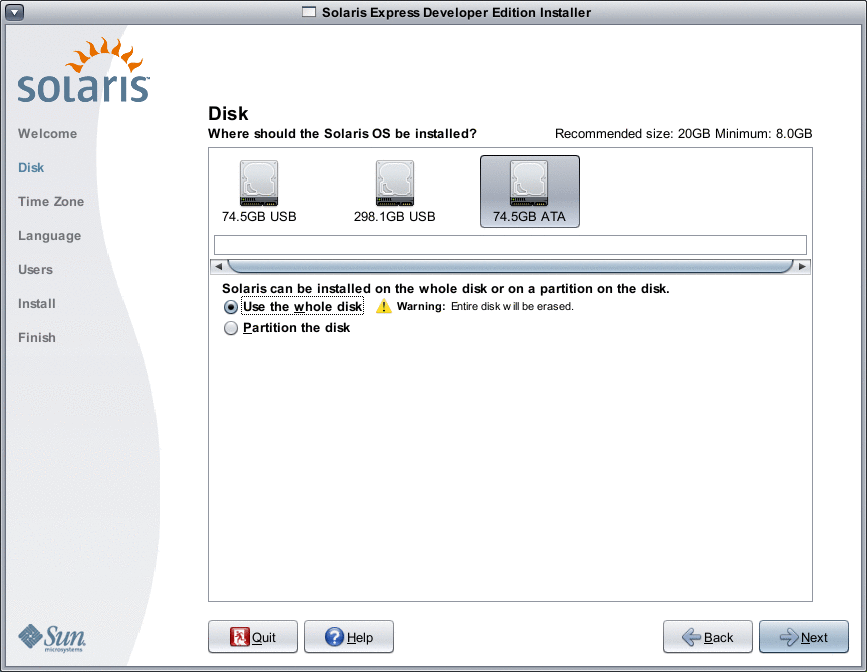CAUTION: This option erases the existing disk. The entire disk is overwritten with the new Solaris OS.
- If you choose to partition the disk, review the following partitioning guidelines:
- In the top portion of the panel, select the disk where the
Solaris OS will be installed.
- In the following panel, select the time zone, date, and time for your
installed system.
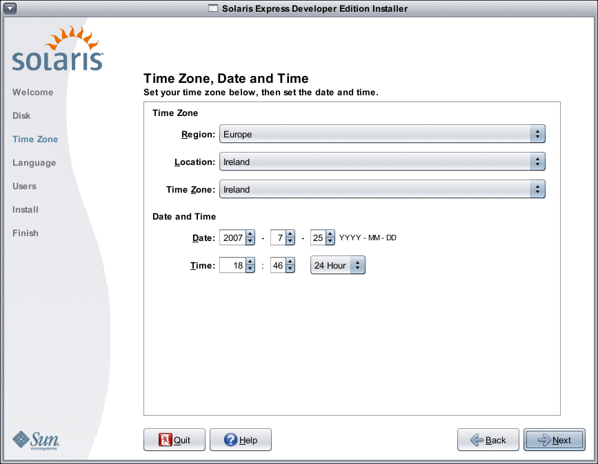- Select your Region, then select the Country. Finally, select Time Zone.
The options for each drop-down list are determined by the selection made in the prior drop-down list.
- Edit the date and time.
Date and Time defaults to the current clock settings found in your computer or network.
- Select your Region, then select the Country. Finally, select Time Zone.
- In the following panel, select the language support to be installed on your
system.
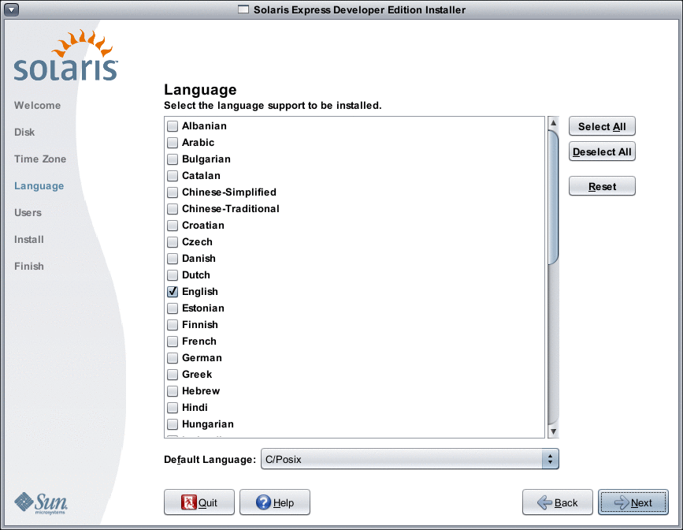All language support that is available for your system is displayed.
Language support provides input methods for the language of your choice and country-specific symbols for system-input methods on the installed system.
For example, the following are provided in the language of your choice in the installed system:
Text entry
Date and time formats
Currency symbols
Other language and location-sensitive settings
Language support also includes system translations for the most commonly used languages, the same languages that are available for this installer. For example, installing English and French also installs the system translations for those languages. If the user sets a less-commonly used language as the default language, English is used for system messages.
Review the following guidelines:
You can select multiple languages. Then, select one of these languages as your default language. The default selections are the installer language and the native languages for the country selected in the Time Zone panel.
The Default Language drop-down list displays all valid specific language and country options for the selected languages and selected country. For example, specific options for an English-speaking country might include English (UK), English (US), or English (Malta).
You can select all languages or deselect all languages. English C/POSIX is always installed. If you deselect all languages, the Default language drop-down list is automatically set to English C/POSIX.
You can use the reset button to restore the panel to the initial default settings.
- In the following panel, type a root password and define a user account.
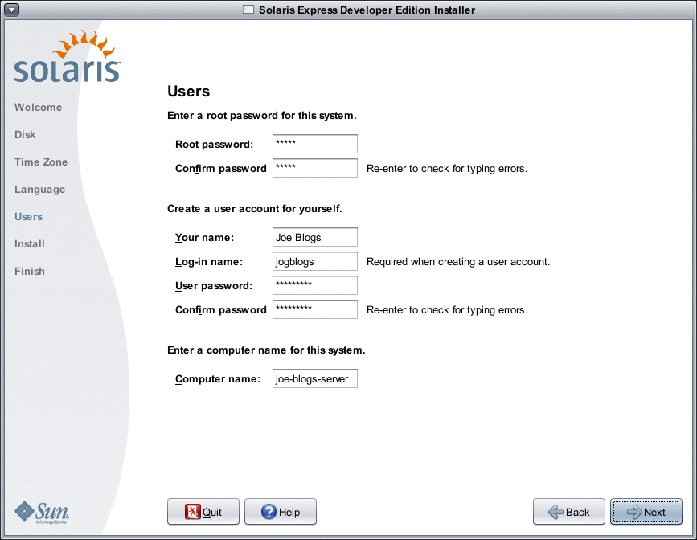Review the following guidelines:
Both the root password and user account are optional. However, for better security, do complete these fields.
If the root password is not defined, a reminder is displayed when you click Next. If you do not want to define a root password, you can proceed.
A user account requires only a Login name for the account to be valid. For better security, however, do complete all fields.
If the user account information is not valid, a reminder is displayed when you click Next. If you do not want to define a user account, you can proceed.
- In the following panel, review and confirm installation specifications and the license agreement.
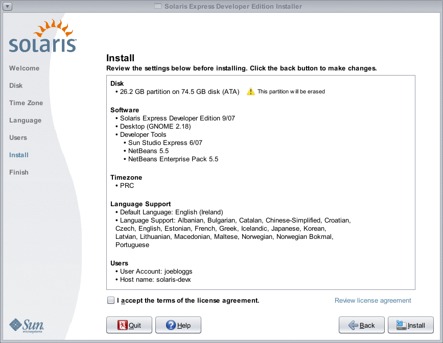- Review your installation selections.
- (Optional) Use the back button to make changes.
- Review and accept the license agreement.
If you do not accept the license and you select Install, a dialog box asks for license acceptance.
- If you click Cancel in this dialog box, the installer returns to the Review panel.
- If you click Accept in this dialog box, the installation begins.
- Click Install.
CAUTION: The installation begins when you click Install. You cannot stop the installation unless you turn off the computer. Terminating the installation leaves the disk in an indeterminate state.
A progress bar and information messages display during the installation of the Solaris OS.
After a successful Solaris installation, developer tools are automatically installed. Progress messages indicate the status of the developer tools installation.
- Review the installation results.
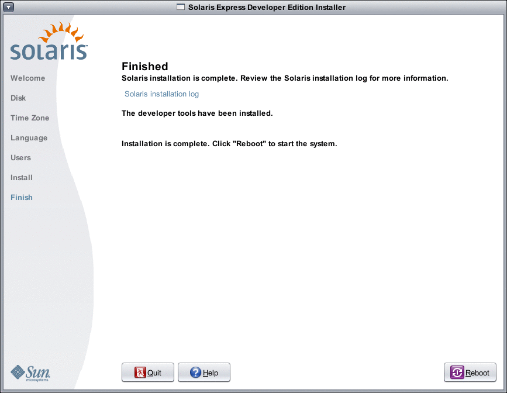The final panel displays completion messages. You can review installation logs in this panel. You can either Quit or Reboot from this panel.
- After a successful installation, to start the installed system, select Reboot. The reboot process might take a few minutes.
- To exit, select Quit.
Then unmount and eject the DVD by using the following command:
% /usr/sbin/umount /cdrom
Next Steps
After you have installed the Solaris Express Developer Edition, complete the following optional tasks.
After the installation is finished, installation logs are saved in a file.
View installation logs at the following locations:
/a/var/sadm/system/logs/install_log
/a/var/sadm/system/logs/upgrade_log
/a/var/sadm/system/logs/sysidtool.log
If the installation failed, close the installer and a terminal window opens to provide command-line access. You can use the command line to explore the cause of failure, reboot, or restart the installer as follows:
Reboot the system:
% reboot
Restart the installer:
% install-solaris
View installation logs at the following location:
/a/var/sadm/system/logs/
If you have another operating system on your system, you might need to update the GRUB menu to add an OS to the menu. The GRUB menu displays a list of operating systems that can be booted. The Solaris OS and the Windows OS are displayed automatically on the GRUB menu. The contents of the GRUB menu.lst file dictate what is displayed in the GRUB menu when you boot the system. If you have an additional Solaris OS or a Linux OS, you need to edit the GRUB menu.lst file. For information about editing the GRUB menu.lst file, see GRUB menu.lst File and Boot Time Interactions in System Administration Guide: Basic Administration.
After the system reboots, you can open a browser to review the Solaris Express Developer Edition information page.
During the installation, a root user is set up. After the installation, you can set up additional user names which can then be used to create logins to the system. On your first login by root after the installation, the Users & Groups Admin tool starts. This tool can be used to set up these additional users. After this setup, log out and log back in as one of these new users. For further information, see Setting Up User Accounts (Task Map) in System Administration Guide: Basic Administration.
Note - Logging in to the system as root for ordinary system usage is not recommended.
To Complete an Upgrade of a Solaris OS on an x86 Laptop
Before You Begin
Complete Steps 1–10 in To Start an Installation or Upgrade of the Solaris OS on an x86 Laptop.
- In the following panel, select the disk and the existing Solaris OS to
be upgraded.
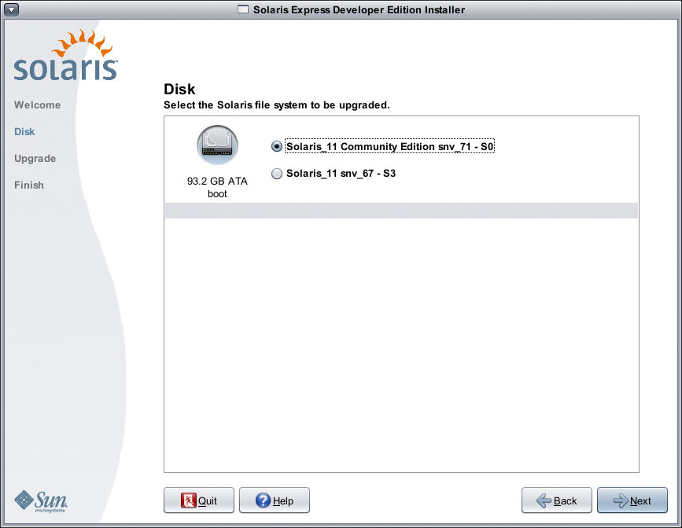This panel displays the internal disks, external disks, and solid-state drives that are available on the system. To be recognized by the installer, the disks and solid-state drives must be turned on at the time the computer boots.
This panel also lists existing Solaris operating systems on each disk. Solaris OS releases that are too old are noted as such and cannot be selected.
- In the following panel, review and confirm upgrade specifications and the license agreement,
then click Upgrade.
Use the back button to make changes.
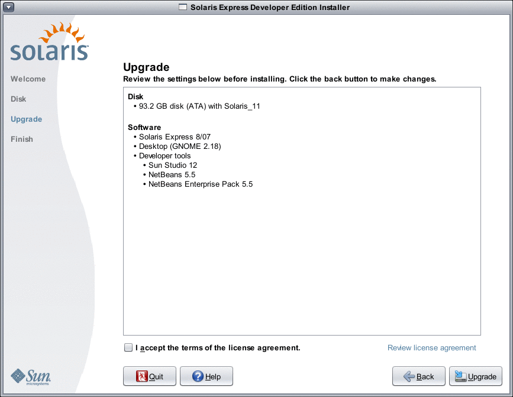CAUTION: The upgrade begins when you click Upgrade. You cannot stop the upgrade unless you turn off the computer. Terminating the upgrade leaves the disk in an indeterminate state.
- Review the upgrade results.
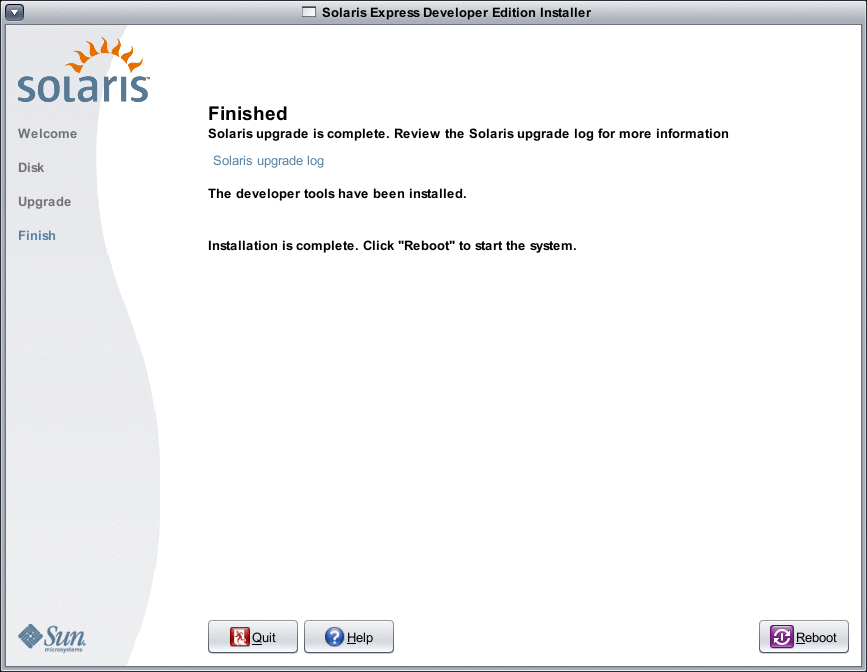The final panel displays completion messages. You can review upgrade logs in this panel. You can either Quit or Reboot from this panel.
- To start the upgraded system, select Reboot.
The reboot process might take a few minutes.
- To exit, select Quit.
Then unmount and eject the DVD by using the following command:
% /usr/sbin/umount /cdrom
- To start the upgraded system, select Reboot.
Next Steps
Review the post installation tasks listed at the end of the installation procedure.
| Previous |